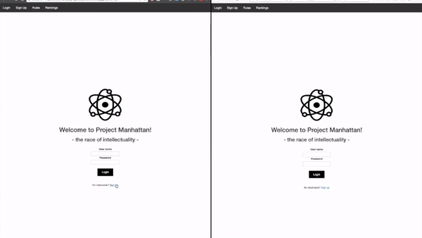
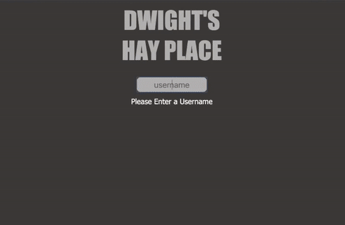
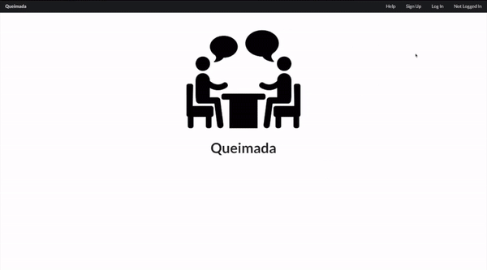

Patrick Abejar
Web Applications Engineer
adding dimensions of creativity and fun to the traditional RESTful CRUD experience
favorite technologies
Canvas | JavaScript ES6 | React | WebRTC | Esolangs
featured apps
Project Manhattan

Quiz-based game where users play as nations showcasing their intelligence to gain talented people to build the atomic bomb
GitHub Repos
Frontend & Backend
Dwight's Hay Place

Utilized vanilla JavaScript, event listeners, and CSS grid to create browser-based maze game based on NBC's The Office
GitHub Repos
Frontend
Backend
Queimada Social Network

User friendly and intuitive social networking website for organization with peer-to-peer connection
GitHub Repos
Frontend
Backend
Impatience
An HTML canvas based game where users dodge crowds of tourists through New York while walking through the city
GitHub Repos
Frontend
Backend